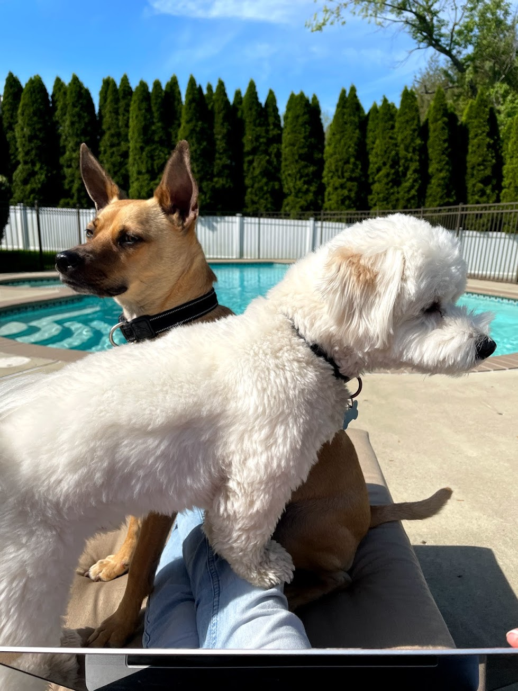
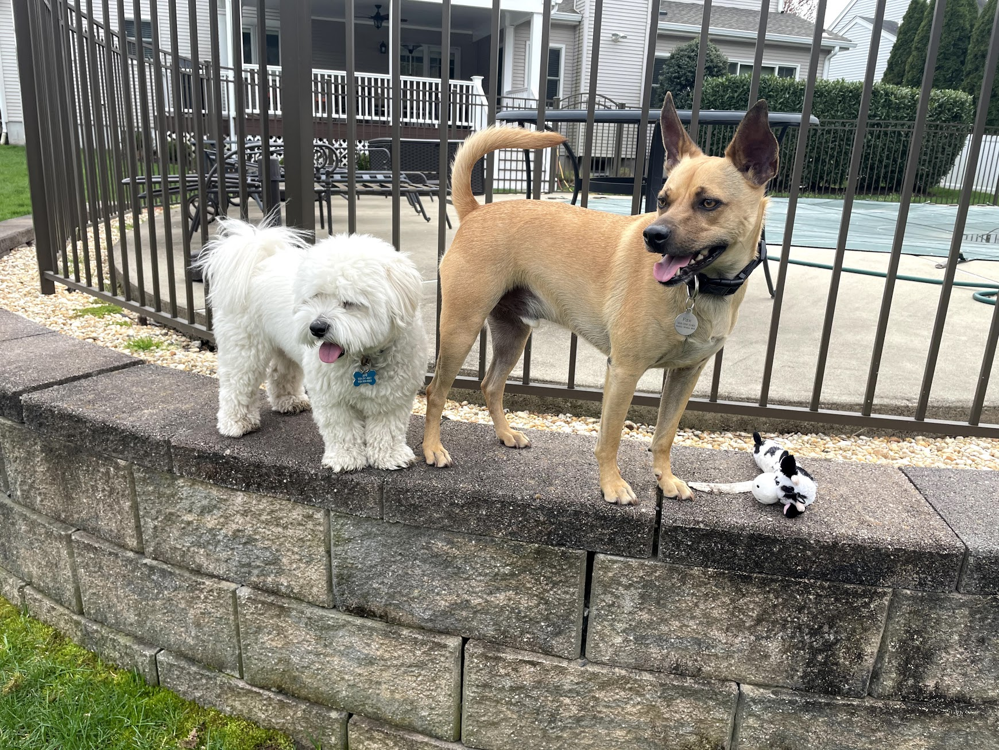
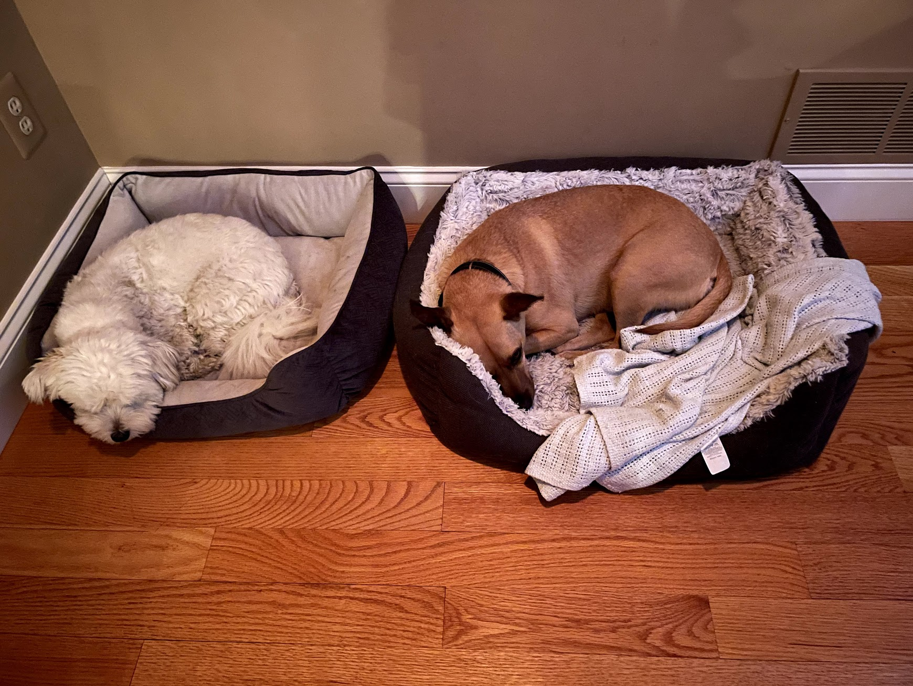
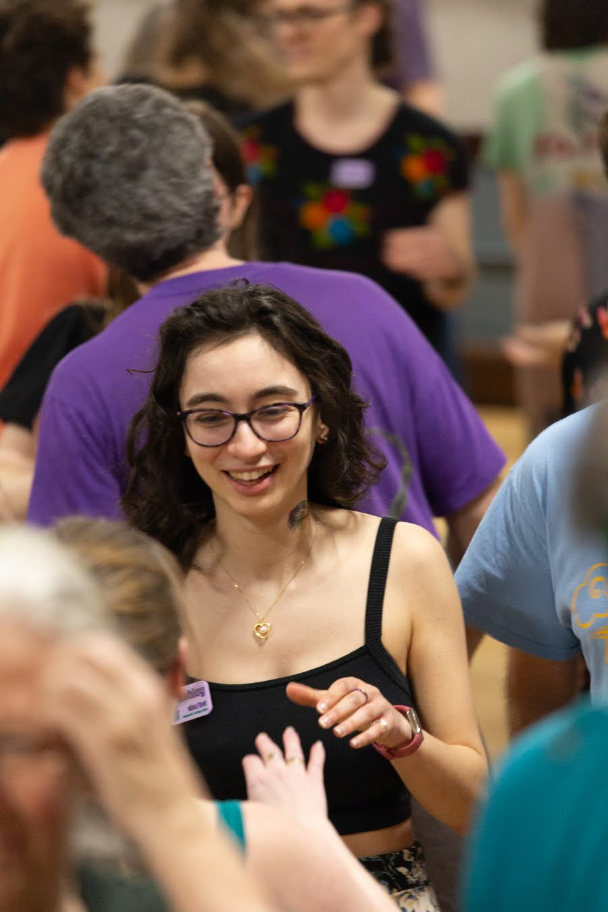
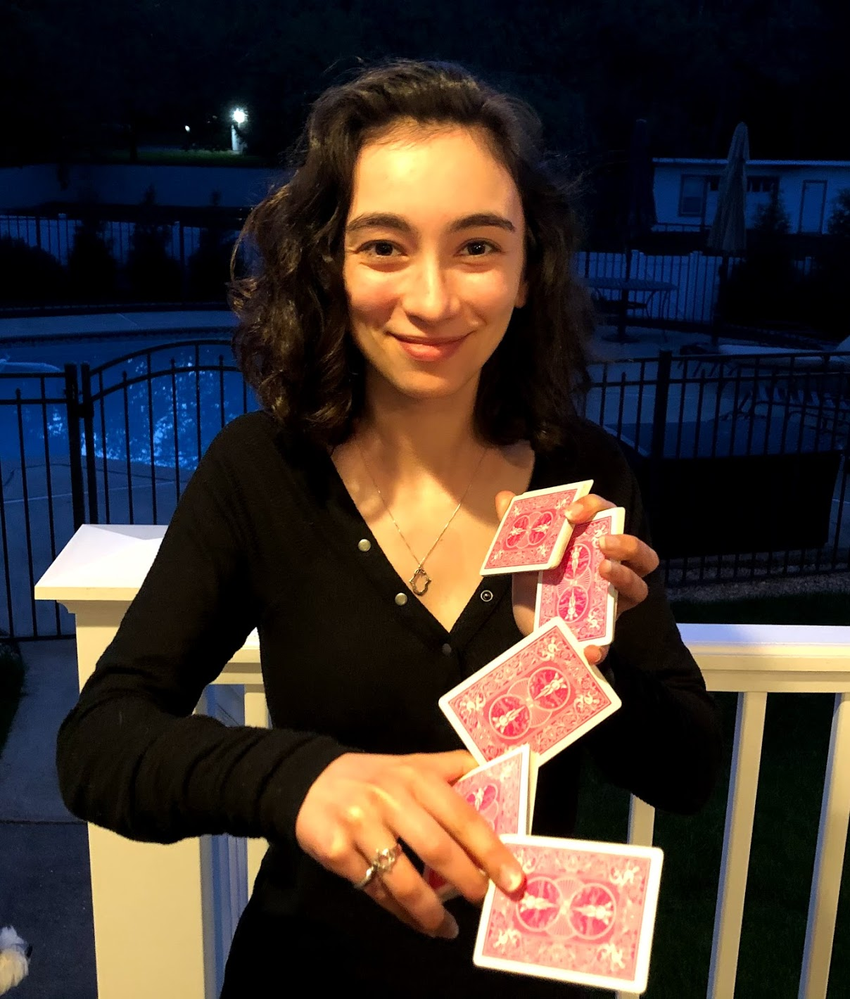
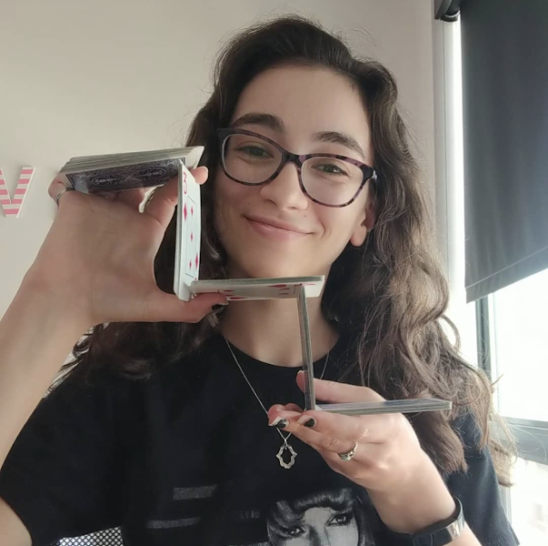
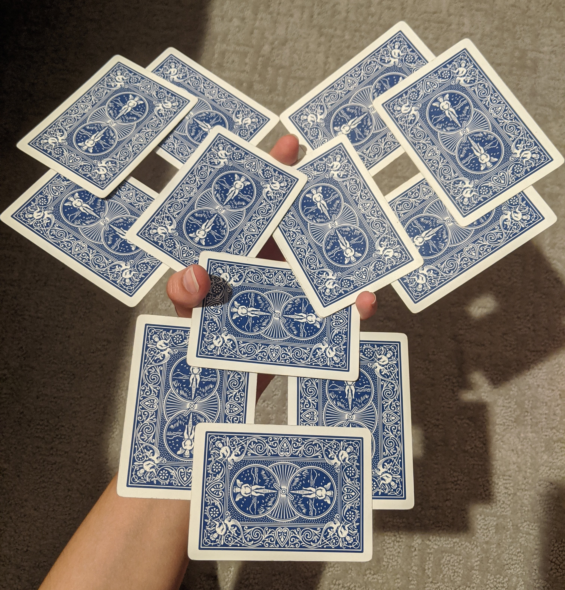
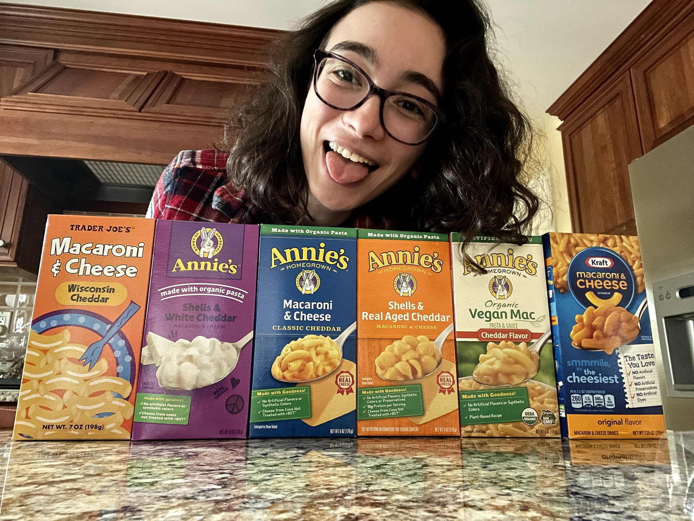
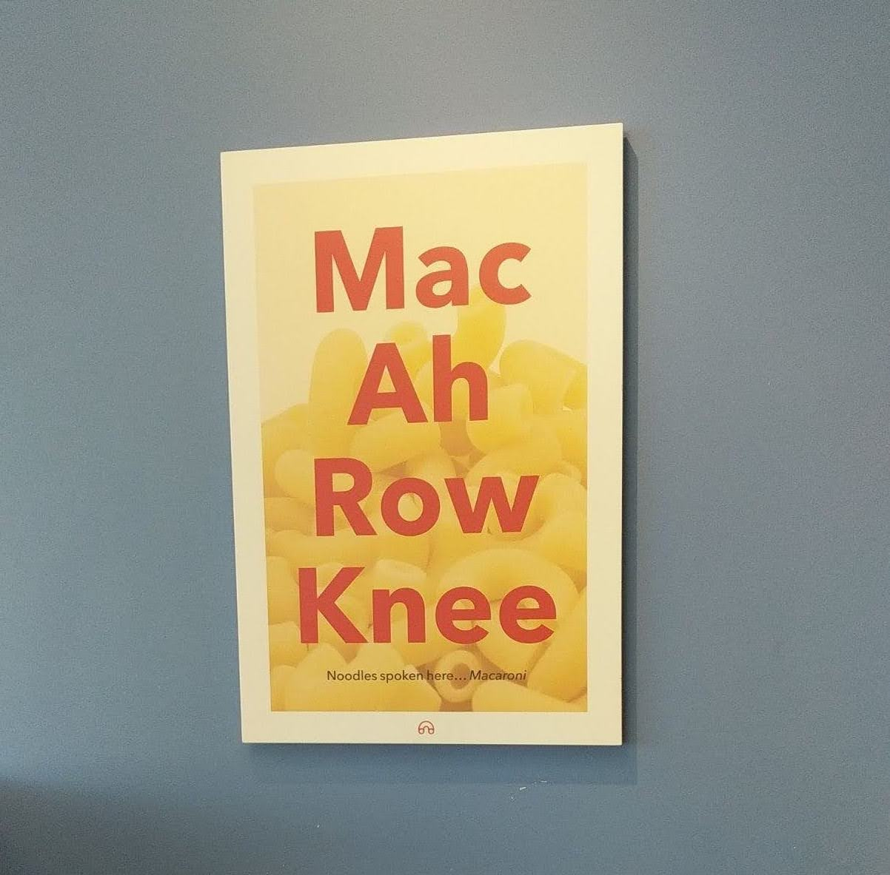
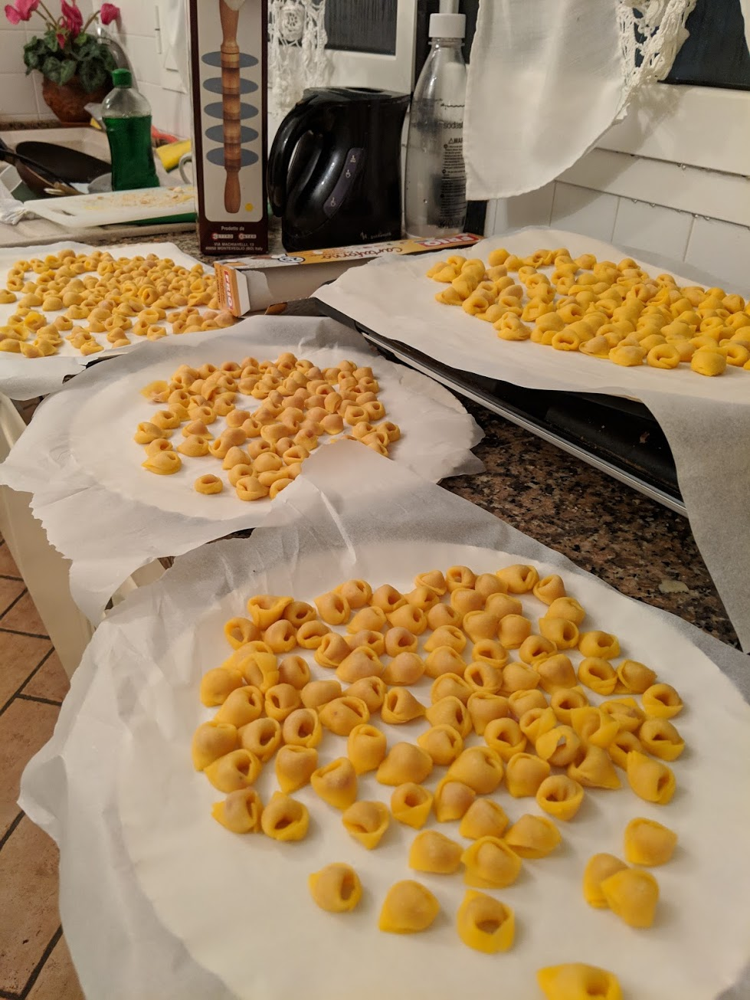

Software Developer
I’m currently building Learn Mobo, a sex education platform for educators and parents. I also make games for Jewish education, which you can check out here!
Previously at


Hi, I'm Ashley, and I'm a software developer, dog lover, dancer, cardist, mac and cheese lover, Italian speaker, and world traveler.
I’m currently building Learn Mobo, a sex education platform for educators and parents. I also make games for Jewish education, which you can check out here!
Previously at
I love my dogs more than words can describe. Check out Zeke’s instagram account, @zekethecoton!



I love contra dancing and West Coast Swing dancing. You can find me running to the dance floor any time a contra dance or a West Coast Swing song comes on!



I like to come up with new cool ways to shuffle cards. You can check out my cardistry instagram, @cardistashley, if you want to see my skills in action!



I love macaroni and cheese. You can find me eating it at least twice a week. Enjoy these photos of me with my beloved mac and cheese below!


Ho studiato in Italia per cinque mese durante la mia laurea. Mi piace Italia molto, specificamente la lingua e il cibo! Cerco spesso le opportunità di praticare il mio italiano. Mandami un messaggio in italiano qui!

I love to travel! Check out all the countries I have been to below: